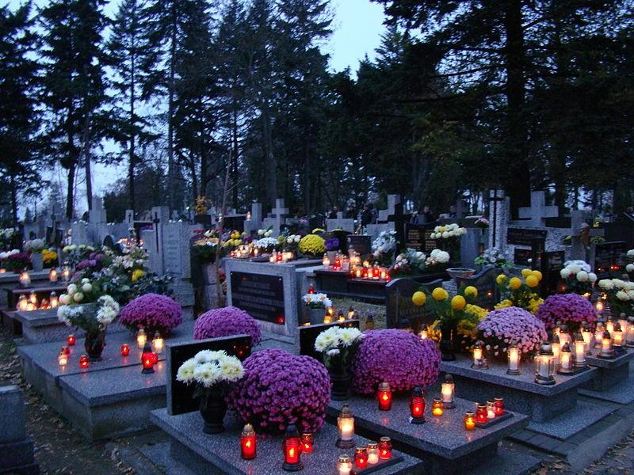

Wszystkich Świętych obchodzimy 1 listopada. Jest to dzień pamięci o świętych oraz osobach, które odeszły. Wiele osób odwiedza cmentarze, zapala znicze i składa kwiaty na grobach swoich bliskich.

Pamiętamy o bliskich.